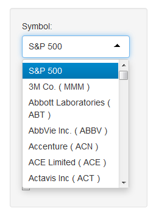
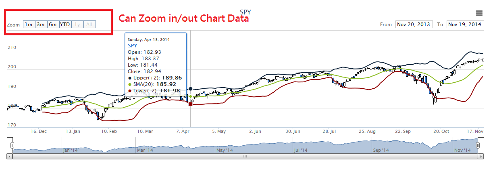

Stock Symbol Selection
1. Choose Symbol


2. Choose Date Range
3. Choose Data Range
4. Volume Data Hide/Display
Technical Analysis Setting
1. Choose Technical Analysis
2. Input Settings
Data Display and Functions
1. Data display on Chart

2. Zoom in/ Zoom Out
3. Export Chart